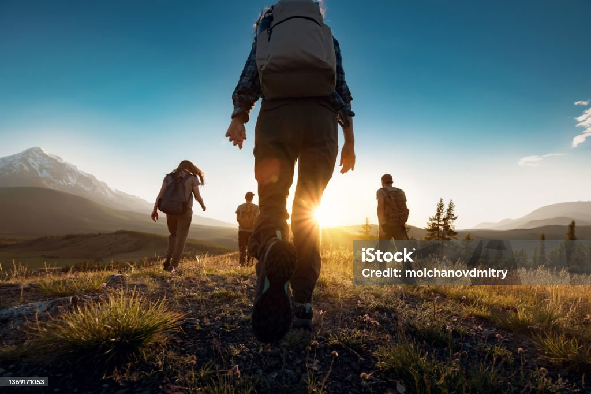
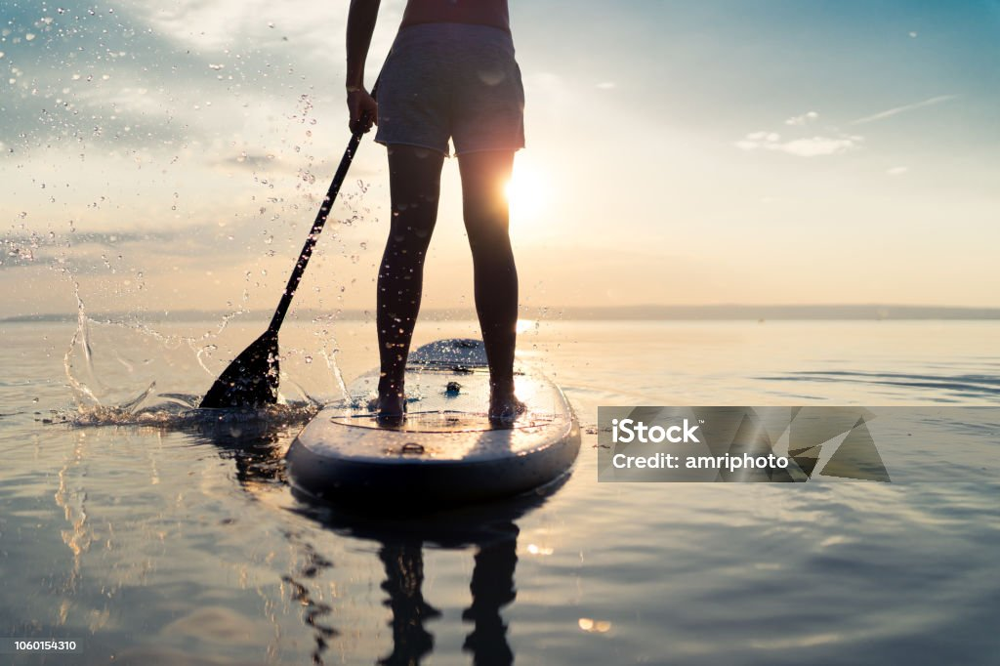

"Hi, I'm Rachel Davis, a passionate developer with a love for hiking, photography, and paddleboarding."
Hiking
Hiking is one of my favorite pastimes. I love exploring new trails and enjoying the beauty of nature.
Whether it's a short day hike or a multi-day backpacking trip, being outdoors is where I feel most at home.
Some of my favorite hiking spots include the Appalachian Trail, Yosemite National Park, and the Rocky Mountains.
Hiking not only keeps me physically active but also provides a sense of peace and tranquility.
Photography

Photography is a passion of mine. I love capturing moments and telling stories through images.
From landscapes to portraits, I enjoy experimenting with different styles and techniques.
My camera is always with me, ready to capture the beauty of the world around me.
Photography allows me to express my creativity and share my perspective with others.
Paddleboarding
Paddleboarding is another activity I enjoy. It's a great way to relax and connect with nature.
Whether it's on a calm lake or a gentle river, paddleboarding offers a unique perspective of the water.
I love the feeling of gliding across the water and taking in the surrounding scenery.
Paddleboarding is not only a fun activity but also a great workout for balance and core strength.